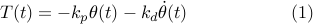

To go further into the details, without giving away the solution to the Segway race, we will help you to develop a controller for the pendulum (as opposed to the inverted pendulum). As you have seen in the modelling section, the two models only differ by a sign-change in one of the terms, so you will have to go over the maths again to design the Segway control system. But let’s worry about that later - now it is time to bring out your LEGO kits and start building!
A LEGO overhead crane
We are going to show you how the analysis that we have done so far can be used to develop a controller for the LEGO vehicle below. The vertical arm hangs freely (and thus behaves like a pendulum) while motors allow to accelerate the main body of the vehicle. The complete assembly instructions can be found here.

Our vehicle does not ressemble a Segway, but looks more like the overhead cranes you can find transporting heavy goods in harbours and industries. Overhead cranes have control systems that elimitate the natural swinging of the goods when the vehicle changes position. Since the mathematical models describing the dynamics of the crane and of a Segway vehicle is so similar, understanding how to control the crane will be useful for you in the Segway challenge.
Specifically, our initial design will use a gyro to measure the angle and its rate-of-change, and compute the desired torque using a PD-controller

Note that the gyro should be connected to port 1, and the motors to port A and C, respectively.
Once you have assembled the vehicle using your LEGO mindstorms pieces, we can move along and see how we can program up the controller in the LEGO NXT [continue »].